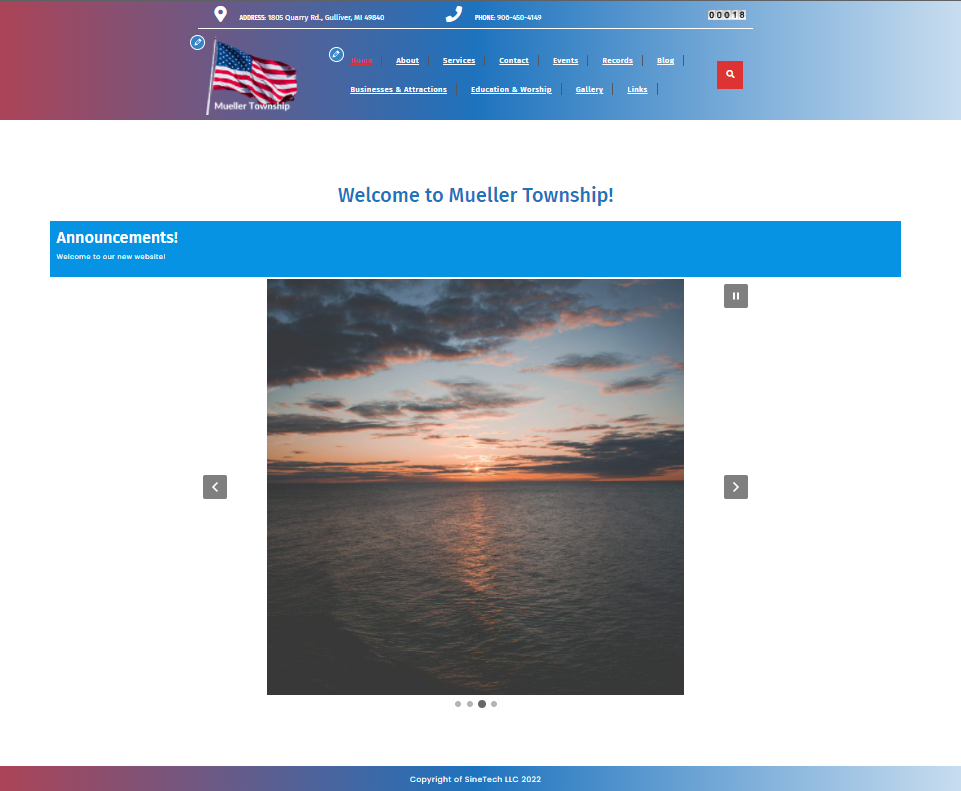

The Mueller Township Board has developed a new website at www.muellertownship.com! This new site is to serve as an information resource for both residents and visitors. Be sure to check the site for the latest updates from the Township including announcements, events, and services. You can also find meeting notices, meeting minutes, ordinances, election information, and so much more.
Previous Comments
Thank you to Mueller Township for allowing SineTech to help with this new site!
Thank you to Mike and Ally at Sinetech for developing this website for Mueller Township. It will provide a great source of information for current residents and businesses. Additionally, those considering to locate here will find worthwhile information. Thank you.
Hello my name is Matt Fischer twp trustee im here fore the pepols voice .please contact me with your conserns regarding Muller Twp your voice of the pepole .